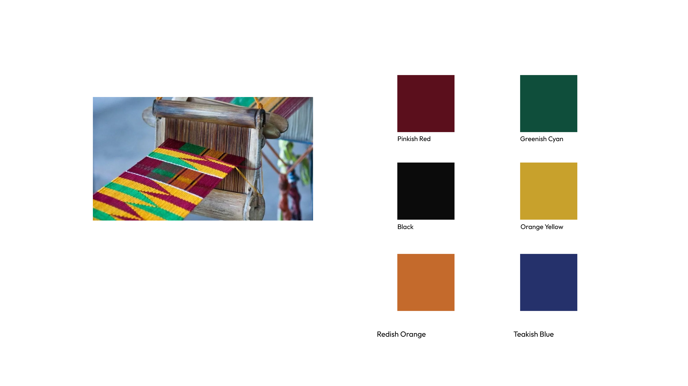
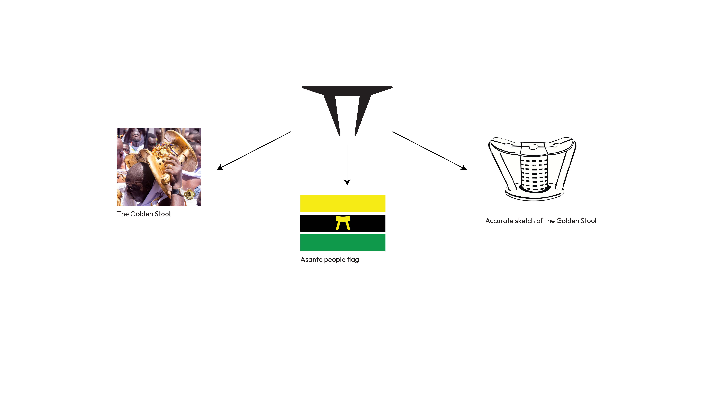
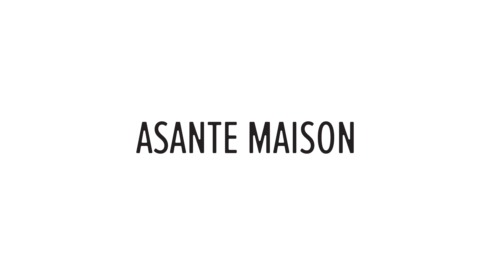
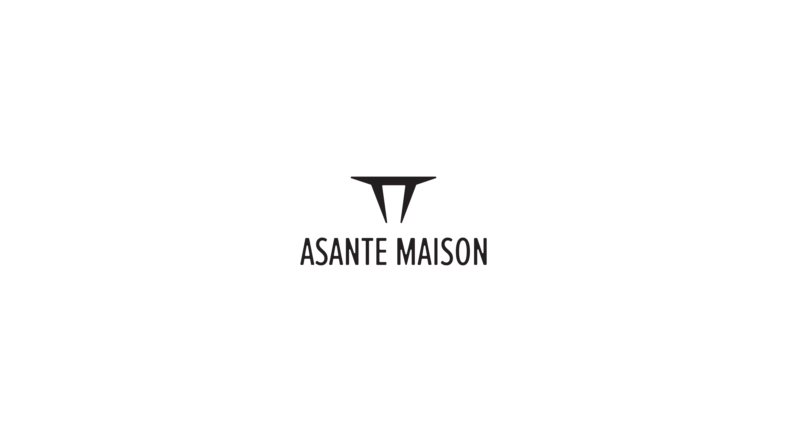

Designing a restaurant brand identity inspired by either the African, Oceania or Americana cultures.
Asanti: A name that means because of war
in Twi but I actually used the meaning
from the Kiswahili language which
means "Thank you" or "gratitude." Maison: French for:
"House" or "home."
Asante Maison is a royal house of Ghanaian heritage where people gather
to experience the culture, cuisine, and traditions of the Asante people through fine dining.
Asante Maison exists to preserve,
celebrate, and share the spirit of
Ghana through unforgettable
dining experiences.
Our values include heritage,
gathering, community, celebration
and royalty. We want every
customer to feel like they are a part
of us, to be treated like royalty and
to enjoy an amazing company around
the restaurant.
We have decided to tell stories even through every dish.
Asante Maison is a royal house of Ghanaian heritage that is inspired by the culture and heritage of the Asante people. We offer more than a meal, we offer storytelling through our menus/cuisines, good hospitality and a treatment fit for royalty. We want people to feel at home and learn about the roots of the Asante people through our visuals, staff, music, and cuisine.
To celebrate, and share the heritage, cuisine, and hospitality of the Asante people through fine dining experiences.
To give our guests traditional flavours and excite them with the Asante stories while giving them an exceptional fine dining experience with excellence and cultural pride.
To become the leading destination for authentic Ghanaian fine dining.
Uncompromised material honesty, architectural geometric precision, and timeless spatial endurance variables.
Brand Archetype: The Ruler + Care Giver - we give you a royal treatment, fine dining,
and treat you with dignity. We welcome you warmly, offer good service, and a sense
of community.
Asante Maison welcomes you with warmth, treats you like royalty, and shares the
amazing heritage of Asante people through fine dining experience.
Brand Personality:
Sophisticated
Cultured
Hospitable
Proud
Refined



